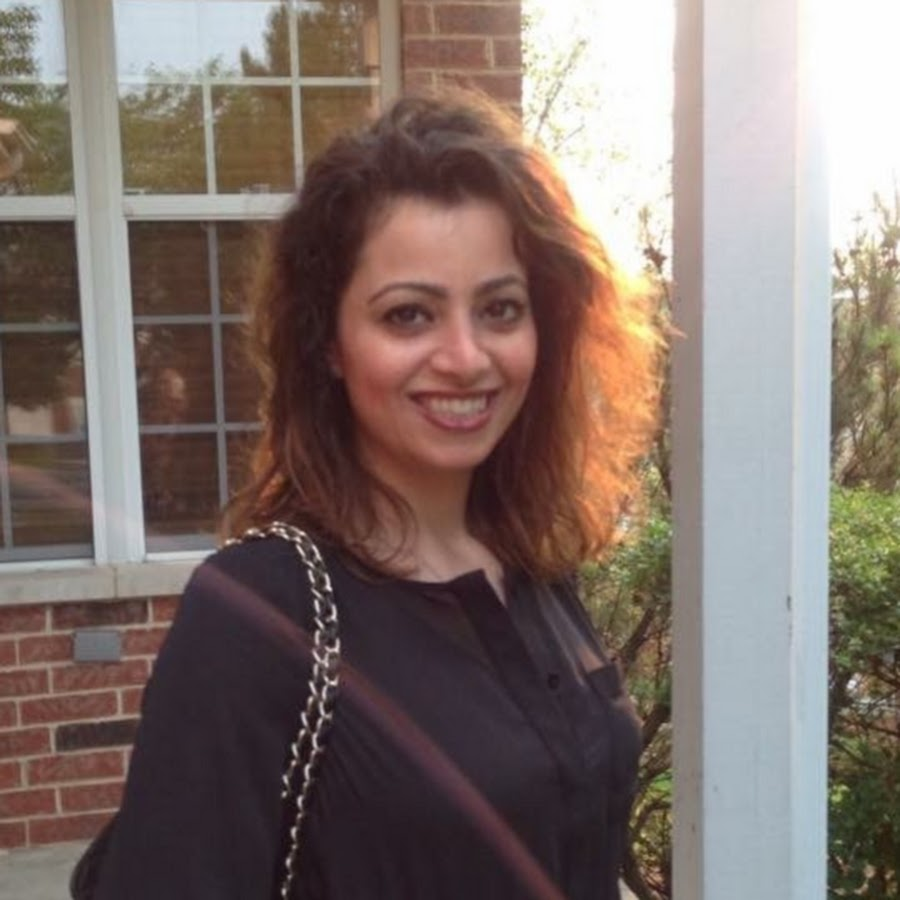

About Me
 Hi there! My name is Sheima and I wear 3 hats as a freelance graphic designer, frontend developer and Painter based in Chicago. As a professional graphic and web designer, I bring a range of art and design disciplines to every project I work on. From brand strategy and user interface design to creative writing and front-end development, my work exemplifies an appreciation for complete brand experiences.
I have collaborated with many clients from all over the world to produce high quality design work. This website is my Freelance Graphic Design portal. You can view a few samples of my graphic design work in Portfolio, if you would like to request a project or ask questions, you can always Contact me.
My favorite activity is listening to music, because I could do it anytime that I like. I could also do it in every activity I do. Even if I’m not really listening to music, when I’m just imagining music in my ears.
Always remember that “There are three responses to a piece of design – yes, no, and WOW! Wow is the one to aim for.” -Milton Glaser